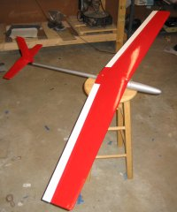

The Hammerhead is a one-design slope racer from Polecat Aeroplane Works that conforms to the Midwest Slope Challenge's One-Design Rules. It has glass underneath the wood sheeting on the wings and features a glass fuselage with carbon fiber reinforcements and a slip-on nosecone. It also sports a handy removable tail. The wing is also forward-swept by about 2 inches.
It balances 2.125" from the leading edge at the center, and mine ended up weighing right at 26oz, which is good considering that the minimum weight for a one-design ship is 25 ounces. I used a very heavy Sullivan "Goldenrod" push-cable for the elevator. Had I used music wire or a carbon fiber rod, I could have hit 25 oz on the nose. A ballast system is planned for this bad boy.
